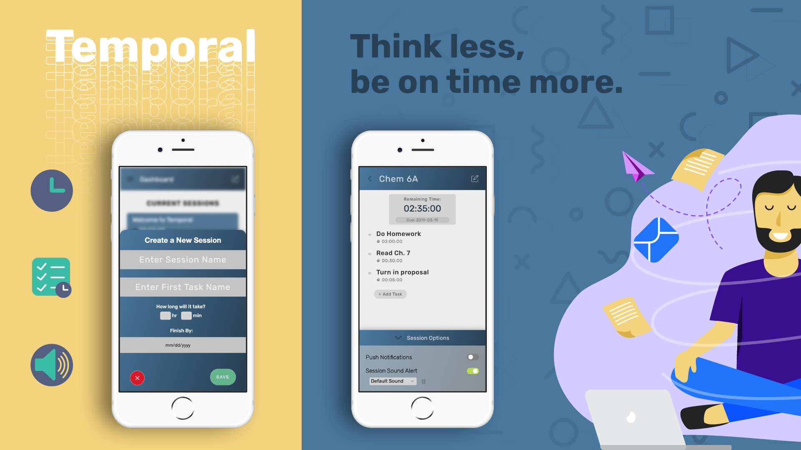

Temporal
Team:
Dan Tran, Johnathan Tran, Angelica Ramos
Role:
UX Designer & Backend Developer
Timeframe:
Jan-Mar 2019
Overview/Background
Oftentimes, people have encountered scenarios where they are overwhelmed with work. Sometimes, they don’t manage their time efficiently and wait until the last minute to do their work. Sometimes, these tasks are so easy that they wait until the last minute. When these tasks build up, it can cause unnecessary stress. When people are stressed, they are more prone to distractions and will lead to procrastination.
However, after talking to several college students, this could be resolved by allocating time into tasks ahead of a deadline. However, many apps don’t include a timer to track how much time is done within the tasks. One could approximate the time it takes to do one task and time it. If a task is too big, a person could allocate it to minitasks and split the time. If one finishes a task early, they could cross it out and find out they have free time. If one finishes a task above their estimated time, they could add more time and realize that they should spend more time into this task. As a result, proper time management is key in finishing work.
In one course in Interaction Design, I worked with two other people to create a mobile web app that helps the user manage tasks through the use of timers, lists, and sound feedback. We learned how the design process works, such as needfinding, prototyping, designing the app, and user testing.
Our app, Temporal, was designed to help college students manage their time by creating a means to track how many tasks they have to do and how much time they have to do in these tasks. I was primarily responsible for coding the functionality. I also contributed to some of the CSS design work in the final product.
Problem Statement
Many college students encounter the problem of being overwhelmed when they don’t manage their time efficiently. Usually, people won’t remember all the due dates and the estimated times it takes to finish before the deadline.
User Research/Needfinding
In the needfinding process, we asked and observed several college students, trying to study in their free time. We observed some breakdowns, such as being distracted by their phone. We also interviewed them, asking questions about their procrastination. We asked questions, such as if their procrastination was preventable and why they felt that way.
In order to draw inspiration, we looked at popular apps that are involved with tasks or time. We looked at any.do for how it keeps track of tasks. We were inspired by the Android timer and how it times how much time a user has once it sets. We looked at Alarmy’s simple list design and how they used icons to fit everything within one block.
any.do
Alarmy
Android Timer
Storyboards
In order to showcase what our users needed, we created storyboards on how the app can be used in different situations. In storyboard 1, it focuses on how the app can be used to study for an exam. In storyboard 2, it focuses on how the app can be used for breaks. In storyboard 3, it focuses on how the app can be used for exercising
Storyboard 1
Storyboard 2
Storyboard 3
Prototypes
Our group started with low-fidelity prototypes, so we didn’t have to keep changing the design if we made it. We made two prototypes with design choices and screens that we thought we would do. Prototype 1 has a more boxy, modern feel, while Prototype 2 has a simple look that’s easy to navigate. Prototype 1 has more sections (goals section and calendar section), but Prototype 2 doesn’t include it. Prototype 2 has a reminder message when it’s getting closer to the time running out.
Low-fidelity Prototype 1
Low-fidelity Prototype 2
High-fidelity Prototype
User Testing
After making our paper prototypes, we needed to see if our paper prototypes made any sense to someone unfamiliar with our product. So, we gave several of our peers (~5 people) the paper prototypes and hoped that they could navigate it without getting confused. After navigating, our peers did heuristic evaluations, using Neilsen's 10 Design Heuristics. Some changes that we did based on the feedback are:
- Cosmetic changes to the UI by spacing things apart more for a more minimalist look
- Add some more user control by adding a back/undo button
- Adding a help/documentation page to make the user more familiar with the app if they’re confused
After making the high-fidelity prototype and making the first version of the product, we did user testing from three college students. We found common themes amongst our different users. We noticed there was an inconsistency with intuitive language on the task card, lack of user freedom when navigating the session page, and slight confusion on the purpose of menu bar tasks. We anticipated some of our design choices to be intuitive to them, but it wasn’t. We believe users had a lack of user freedom because we had not fully implemented all the functionality we wanted. One user tried to fully explore the session page feature and could not figure out how to edit or delete tasks, making them feel stuck.
We also did A/B testing to see if certain design choices were better than another. Some changes we did were:
- A new color for the new session button
- Change the “Current Sessions” list to a card styled list rather than our stacked list of sessions
Version A
Version B
Final Product Design and Results
It’s amazing to see how an idea made from the collaborative effort between the team has spawned a creation. Even with scheduling problems and coding errors, we created something that came from a simple need. The idea moved onto being visualized into paper, then into computer graphics, and then into a functional webapp.
In the end, we made the app, but it isn’t fully functional. We had several weeks to work on the app, but it wasn’t enough. Although the timer does work, there are problems, such as not pausing properly. Although sound does work, we didn’t fully implement the customization of the sound. We also didn’t implement all the style changes perfectly. We didn’t implement the goals or calendar section that we put in our prototypes. Despite these problems, it was a good experience to understand what it was like to be in a team and design a web app. If we had more time, we would’ve fixed these issues.